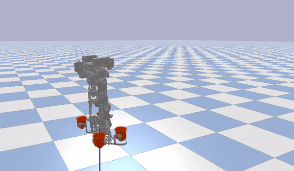

Publications (* indicates equal contribution)

Yuhang Li*, Yuhao Zhou*, Junbing Huang, Zijun Wang, Shunjie Zhu, Kairong Wu, Li Zheng, Jiajin Luo, Rui Cao, Yun Zhang & Zhifeng Huang
Design of a Flying Humanoid Robot Based on Thrust Vector Control
Submitted to RA-L with ICRA 2022 option (Under Review) [arXiv] [Video]
Covered by: [GDUT News]
Design of a Flying Humanoid Robot Based on Thrust Vector Control
Submitted to RA-L with ICRA 2022 option (Under Review) [arXiv] [Video]
Covered by: [GDUT News]

Zhifeng Huang, Zijun Wang, Jiapeng Wei, Jingtao Yu, Yuhao Zhou, Pihao Lao, Xiaoliang Huang, Xuexi Zhang & Yun Zhang
Three-Dimensional Posture Optimization for Biped Robot Stepping over Large Ditch Based on a Ducted-Fan Propulsion System
IROS 2020 [Paper] [Video]
Covered by: [IEEE Spectrum] [GDUT News]
Three-Dimensional Posture Optimization for Biped Robot Stepping over Large Ditch Based on a Ducted-Fan Propulsion System
IROS 2020 [Paper] [Video]
Covered by: [IEEE Spectrum] [GDUT News]